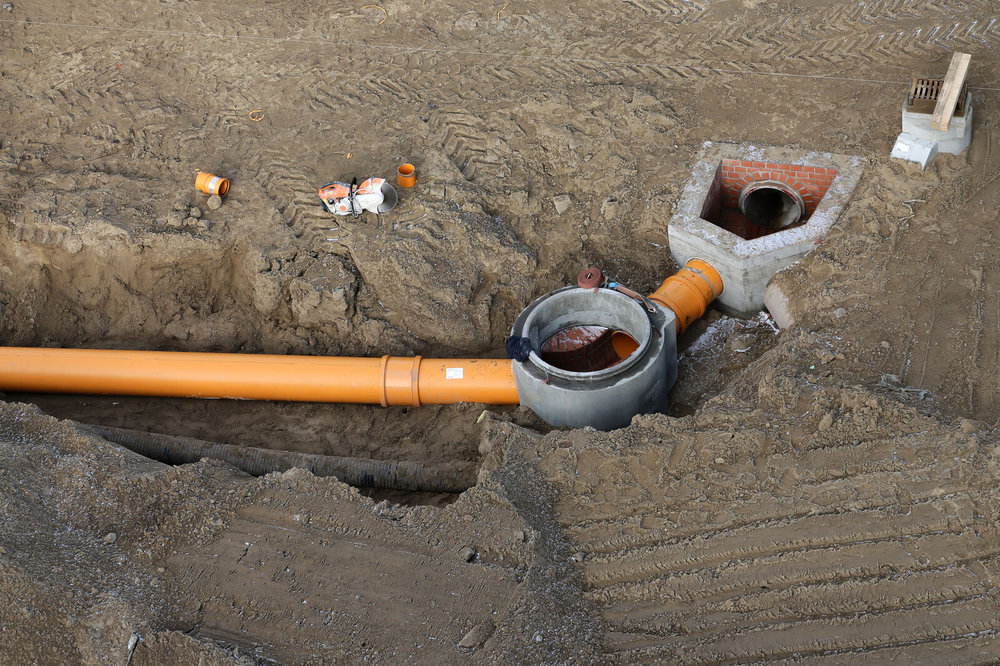

01Siedlungswasserwirtschaft
Sie sind Bauherr oder Architekt und sind auf der Suche nach einem fachkundigen und zuverlässigen Partner für die Planung von Entwässerungsanlagen? Wir bieten Ihnen fachspezifische Beratungs- und Dienstleistungen im generellen Grundstücksentwässerung nach DIN 1986-100 sowie Kanalbau.
Die Siedlungswasserwirtschaft befasst sich u. a. mit der Behandlung und Beseitigung von Niederschlagswasser sowie anfallendem Schmutzwasser. Insbesondere die Neu- und Umplanung von Entwässerungsanlagen erfordert intensive Abstimmungen mit den zuständigen Behörden.
Als Fachplaner für Grundstücksentwässerung nach DIN 1986-100 und Kanalbau unterstützen wir Sie bei der Planung sowie der Antragsstellung und Kommunikation mit genehmigenden Behörden.